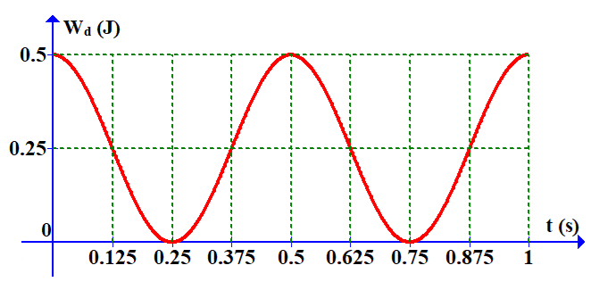
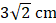
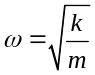
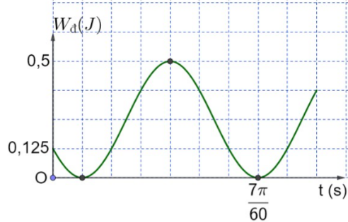

Bài 5 · Động năng, thế năng, sự chuyển hoá năng lượng · 8 câu
PHẦN II. Câu trắc nghiệm đúng sai
Trong mỗi ý a), b), c), d) chọn Đúng hoặc Sai. Đúng 1 ý: 0,1 · 2 ý: 0,25 · 3 ý: 0,5 · 4 ý: 1,0 điểm.
1
Nhận biết
Một vật dao động điều hòa theo một trục cố định (mốc thế năng ở vị trí cân bằng) thì
a) li độ của vật biến thiên theo hàm cos (hoặc sin) theo thời gian.
b) cơ năng của vật biến thiên điều hòa theo thời gian.
c) thế năng của vật cực đại khi vật ở vị trí biên.
d) khi ở vị trí cân bằng, gia tốc của vật có độ lớn cực đại.
2
Thông hiểu
Khi nói về một vật dao động điều hòa
a) Gia tốc biến thiên điều hòa theo thời gian.
b) Động năng của vật không thay đổi theo thời gian.
c) Vận tốc của vật biến thiên điều hòa theo thời gian.
d) Cơ năng của vật biến thiên tuần hoàn theo thời gian.
3
Thông hiểu

Một vật dao động điều hòa có đồ thị động năng theo thời gian như hình vẽ. Trong những nhận định dưới đây, chỉ ra nhận định đúng, nhận định sai.
a) Vào thời điểm ban đầu, vật ở vị trí biên.
b) Vào thời điểm $t=0{,}25$ s, cơ năng của vật là 0 J.
c) Vật dao động với chu kì 0,5 s.
d) Vào thời điểm $t=0{,}125$ s vật có động năng bằng thế năng.
4
Thông hiểu
Xét các phát biểu sau về dao động điều hòa.
a) Cơ năng của một vật dao động điều hoà bằng động năng của vật khi vật tới VTCB.
b) Khi nói về năng lượng của một vật dao động điều hoà thì cứ mỗi chu kì dao động của vật, có bốn thời điểm thế năng bằng động năng.
c) Để có âm thanh vang lên thì chuyển động của màng loa là dao động.
d) Cho một chất điểm dao động điều hòa theo phương trình $x=3\cos\left( 2\pi t+\frac{\pi}{4}\right)$ cm. Li độ của vật vào thời điểm t = 1 s kể từ thời điểm ban đầu là

5
Thông hiểu
Một con lắc lò xo gồm vật nặng có khối lượng m = 1 kg và lò xo có độ cứng 100 N/m dao động điều hoà với biên độ dao động bằng 2 cm.
a) Tần số góc của con lắc lò xo được tính bởi biểu thức

.
b) Cơ năng của con lắc lò xo có giá trị 0,015 J.
c) Thế năng của con lắc lò xo khi vật có li độ 1,5 cm là 0,01125 J.
d) Động năng của vật khi quả cầu ở vị trí có li độ 1 cm là 0,015 J.
6
Thông hiểu
Một vật dao động điều hòa theo một trục cố định (mốc thế năng ở vị trí cân bằng) thì:
a) khi ở vị trí cân bằng, thế năng của vật bằng cơ năng.
b) khi vật đi từ vị trí cân bằng ra biên, vận tốc và gia tốc của vật luôn cùng dấu.
c) động năng của vật cực đại khi gia tốc của vật có độ lớn cực đại.
d) thế năng của vật cực đại khi vật ở vị trí cân bằng.
7
Vận dụng

Một vật có khối lượng 250 g dao động điều hòa có đồ thị động năng – thời gian như hình vẽ, lấy $\pi^{2}=10$.
a) Biên độ dao động của vật là 20 cm.
b) Tại thời điểm vật có động năng bằng 3 lần thế năng thì gia tốc có độ lớn là 10 m/s².
c) Cơ năng của vật là 0,625 J.
d) Tần số góc của dao động là 10 rad/s.
8
Vận dụng
Một con lắc lò xo gồm vật nặng 0,2 kg gắn vào đầu lò xo có độ cứng 20 N/m. Kéo quả nặng ra khỏi vị trí cân bằng rồi thả nhẹ cho nó dao động, tốc độ trung bình trong 1 chu kỳ là $\frac{160}{\pi}$ cm/s.
a) Cơ năng của vật dao động là: $W=64\ J$
b) Đổi đơn vị vận tốc: $v=\frac{160}{\pi}\ cm/s=\frac{1,6}{\pi}\ m/s$